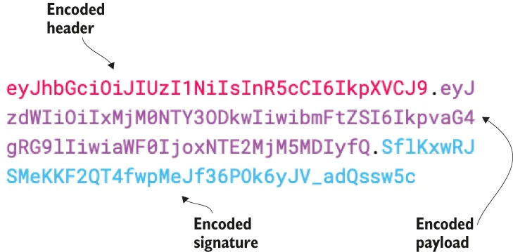
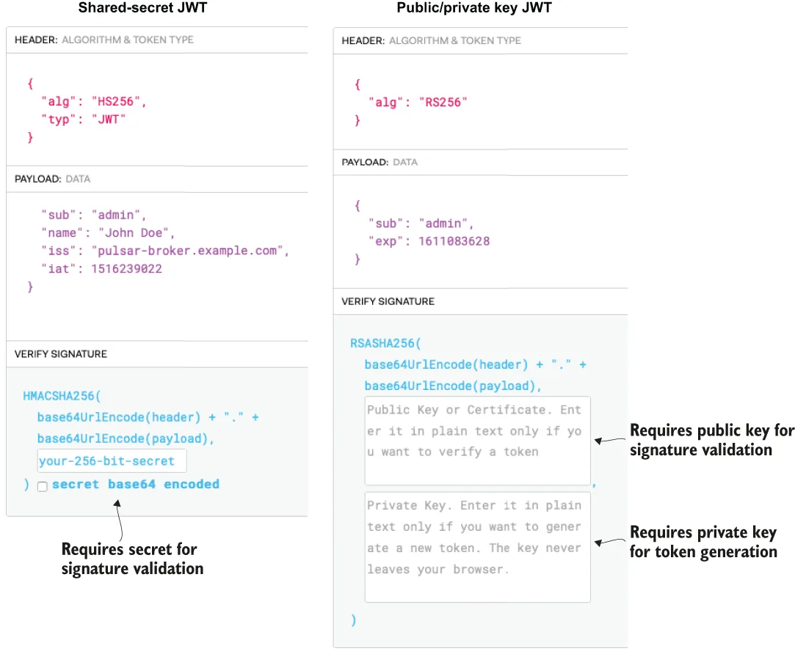

Pulsar supports authenticating clients using security tokens that are based on JWT, which is a standardized format used to create JSON-based access tokens that assert one or more claims. Claims are factual statements or assertions. The two claims that can be found in all JWT are iss (issuer), which identifies the party that issued the JWT, and sub, which identifies the subject or party the JWT carries information about.
Pulsar 支持使用基于 JWT 的安全令牌来认证客户端。JWT 是一种标准化格式，用于创建基于 JSON 的访问令牌，这类令牌会断言一条或多条声明（claim）。所谓声明，就是对事实的陈述或断言。在所有 JWT 中都能找到的两条声明是：iss（签发者），用于标识签发该 JWT 的一方；以及 sub（主体），用于标识该 JWT 所承载信息指向的主体或一方。
In Pulsar, JWTs are used to authenticate a Pulsar client and associate it with some role, which will then be used to determine what actions it is authorized to perform, such as publish or consume from a given topic. Typically, the administrator of the Pulsar cluster would generate a JWT that has a sub claim associated with a specific role (e.g., admin that identifies the owner of the token). The admin would then provide the JWT to a client over a secure communication channel, and the client could then use that token to authenticate with Pulsar and be assigned to the admin role.
在 Pulsar 中，JWT 被用来认证 Pulsar 客户端，并把它与某个角色关联起来；而该角色随后将用于决定这个客户端被授权执行哪些操作，比如向某个给定主题发布消息或从中消费消息。通常的流程是：Pulsar 集群的管理员生成一个 JWT，其 sub 声明关联到某个具体角色（例如标识令牌所有者的 admin）。然后管理员通过安全通信渠道把这个 JWT 交给客户端，客户端便可用该令牌向 Pulsar 认证，并被赋予 admin 角色。
The JWT standard defines the structure of a JWT as consisting of the following three parts: the header, which contains basic information; the payload, which contains the claims; and the signature, which can be used to validate the token. Data from each of these parts is encoded separately and concatenated together, using periods to delineate the fields. The resulting strings look something like figure 6.1, which can be transmitted easily over HTTP.
JWT 标准把 JWT 的结构定义为由以下三部分组成：头部（header），包含基本信息；载荷（payload），包含各项声明；以及签名（signature），可用于校验令牌。这三个部分的数据会被分别编码，然后拼接在一起，用句点来分隔各个字段。最终得到的字符串大致如图 6.1 所示，可以很方便地通过 HTTP 传输。
Since JWTs are based on an open standard, the contents of a JWT are readable to anyone in possession of it. This means that anyone can attempt to gain access to your system with a JWT they generate themselves or by altering an intercepted JWT and modifying one or more of the claims to impersonate a validated user. This is where the signature comes into play, as it provides a means to establish the authenticity of the entire JWT.
由于 JWT 基于开放标准，任何持有它的人都能读出其中的内容。这意味着任何人都可以拿一张自己生成的 JWT 来试图进入你的系统，或者篡改一个截获来的 JWT、修改其中一条或多条声明，以冒充一个已通过验证的用户。这正是签名发挥作用的地方——它提供了一种手段，用以确立整张 JWT 的真实性。

Figure 6.1 An encoded JSON web token and its corresponding parts
图 6.1 一个编码后的 JSON Web Token 及其对应的各个部分
The signature is calculated by encoding the header and payload, using Base64 URL encoding and concatenating the two together along with a secret. That string is then passed through the cryptographic hashing algorithm specified in the header. With JWTs, there are two cryptographic schemes you can use; the first is referred to as a shared secret scheme in which both the party that generates the signature and the party that verifies it must know the secret. Since both parties are in possession of the secret, each party can verify the authenticity of a JWT by calculating the signature for themselves and validate that the value they computed matches the value in the JWT’s signature section. Any discrepancy indicates that the token has been tampered with. This scheme is useful when you want or need both parties to be able to exchange information back and forth in a secure manner. The second scheme uses an asymmetric public/private key pair in which the party with the public key can validate the authenticity of any JWT it receives, and the party with the private key can generate valid JWTs.
签名的计算方式是：先用 Base64 URL 编码对头部和载荷进行编码，再把两者与一个密钥拼接在一起，然后把得到的字符串交给头部中所指定的加密哈希算法处理。对于 JWT，你可以使用两种加密方案。第一种被称为共享密钥（shared secret）方案：生成签名的一方和校验签名的一方都必须掌握那个密钥。由于双方都持有该密钥，任何一方都可以通过自己重新计算签名、并核对算出结果与 JWT 签名段中的值是否一致，来验证一张 JWT 的真实性。任何不一致都说明该令牌已被篡改。当你希望或需要双方能够以安全的方式来回交换信息时，这种方案很有用。第二种方案使用非对称的公钥/私钥对：持有公钥的一方可以校验它所收到的任何 JWT 的真实性，而持有私钥的一方则可以生成有效的 JWT。
There are several online tools available that allow you to encode and decode JWTs, and figure 6.2 shows the side-by-side output from one such tool that was used to decode two different JWTs. The output on the left is from a token that is using the shared secret scheme. As you can see, the contents of the token can be easily read by the tool without any additional credentials. However, the secret key is required in order to validate the token’s signature to confirm it hasn’t been tampered with.
网上有若干在线工具可以用来编码和解码 JWT，图 6.2 展示了用其中一个工具解码两张不同 JWT 时的并排输出。左边的输出来自一张使用共享密钥方案的令牌。可以看到，该工具无需任何额外凭据就能轻松读出令牌的内容。但是，要校验令牌的签名、确认它没有被篡改，则必须提供那个密钥。

Figure 6.2 Verification methods for shared secret vs. public/private key pair signed JWTs
图 6.2 共享密钥签名与公钥/私钥对签名的 JWT 在验证方式上的对比
The output on the right side of the figure is from a JWT using the asymmetric scheme, whose contents can also be easily read without any additional credentials. However, the public key is required to verify the token’s signature. The tool also requires a private key only if you wish to use it to generate a new JWT. Hopefully, this helps clarify the differences between the two and why both the JWT token and an associated key are required to configure Pulsar brokers and clients to use JWT for authentication.
图中右侧的输出来自一张使用非对称方案的 JWT，其内容同样无需任何额外凭据就能轻松读出。不过，要校验该令牌的签名，则需要提供公钥。只有当你希望用它来生成一张新的 JWT 时，该工具才需要私钥。希望这有助于澄清两者之间的差异，以及为什么在配置 Pulsar broker 和客户端使用 JWT 认证时，JWT 令牌和与之关联的密钥两者都必不可少。
Lastly, it is worth mentioning that anyone in possession of a valid JWT can use it to authenticate with Pulsar. Therefore, adequate precautions should be taken to prevent an issued JWT from falling into unwanted hands. This includes only sending JWT tokens over a TLS-encrypted connection and storing the contents of a JWT in a safe location on the client machine. To enable JWT authentication, we append a command to the Dockerfile from the previous section, which executes another script named gen-tokens.sh that generates JWTs that can be used for authentication, as shown in the following listing.
最后值得一提的一点是：任何持有一张有效 JWT 的人都可以用它向 Pulsar 认证。因此，应当采取充分的预防措施，避免已签发的 JWT 落入不该拿到它的人手中。这包括只通过 TLS 加密的连接发送 JWT 令牌，以及把 JWT 的内容存放在客户端机器上一个安全的位置。为了启用 JWT 认证，我们在上一节的 Dockerfile 后面追加了一条命令，用于执行另一个名为 gen-tokens.sh 的脚本，该脚本会生成可用于认证的 JWT，如下面清单所示。
Listing 6.15 Updated Dockerfile contents
FROM apachepulsar/pulsar-standalone:latest
ENV PULSAR_HOME=/pulsar
... ❶
RUN ["/bin/bash", "-c",
"/pulsar/manning/security/authentication/jwt/gen-tokens.sh"] ❷
❶ Same content as shown in figure 6.9
❶ 与清单 6.9 所示内容相同。
❷ Execute the specified script to generate some JWT tokens for role-based authentication.
❷ 执行指定脚本，生成若干用于基于角色认证的 JWT 令牌。
Let’s take a look at the gen-token.sh script in the following listing to see exactly what steps are required to generate the JWTs that can be used to authenticate with the Pulsar broker.
我们来看看下面清单中的 gen-token.sh 脚本，了解生成可用于向 Pulsar broker 认证的 JWT 究竟需要哪些步骤。
Listing 6.16 Contents of the gen-token.sh file
#!/bin/bash
# Create a public/private keypair.
/pulsar/bin/pulsar tokens create-key-pair \ ❶
--output-private-key \
/pulsar/manning/security/authentication/jwt/my-private.key \
--output-public-key \
/pulsar/manning/security/authentication/jwt/my-public.key
# Create the token for the admin role
/pulsar/bin/pulsar tokens create --expiry-time 1y \
--private-key \ ❷
file:///pulsar/manning/security/authentication/jwt/my-private.key \
--subject admin > /pulsar/manning/security/authentication/jwt/admin-token.txt
... ❸
❶ We are going to use asymmetric encryption, so we need to create a key pair.
❶ 我们打算使用非对称加密，所以需要先创建一个密钥对。
❷ Create a token and give it the subject of admin.
❷ 创建一张令牌，并把它的 subject 设为 admin。
❸ Repeats token creation process for additional roles
❸ 为其余角色重复执行令牌创建流程。
After this script is executed, there will be several JWT tokens that have been generated and stored as text files on the Pulsar broker. These tokens, along with the public key, will need to be distributed to the Pulsar clients so they can be used to authenticate to the pulsar-standalone instance. The properties shown in the following listing have also been modified inside the standalone.conf file to enable JWT-based authentication.
该脚本执行完毕后，Pulsar broker 上会生成若干张 JWT 令牌，并以文本文件的形式存储下来。这些令牌连同公钥一起，需要分发给各个 Pulsar 客户端，以便它们能用来向 pulsar-standalone 实例认证。为了启用基于 JWT 的认证，standalone.conf 文件中的下列属性也做了相应修改，如下面清单所示。
Listing 6.17 JWT authentication property changes to the standalone.conf file
#### JWT Authentication #####
authenticationEnabled=true ❶
authorizationEnabled=true ❷
authenticationProviders=org.apache.pulsar.broker.authentication.AuthenticationProviderTls,org.apache.pulsar.broker.authentication.AuthenticationProviderToken ❸
tokenPublicKey=file:///pulsar/manning/security/authentication/jwt/my-public.key ❹
❶ This is required for any authentication mechanism in Pulsar.
❶ 在 Pulsar 中，任何认证机制都必须开启这一项。
❷ Enable authorization.
❷ 启用授权。
❸ Append the JWT token provider to the list of authentication providers.
❸ 把 JWT 令牌提供者追加到认证提供者列表中。
❹ The location of the public key of the JWT key pair which is used for signature validation
❹ JWT 密钥对中公钥所在的位置，该公钥用于签名校验。
If you want to use JWT authentication, you will need to make the changes shown in the following listing to the client.conf file. Since we have previously enabled TLS authentication for the client, we will need to comment out those properties for now, since the client can only use one authentication method at a time.
如果你想使用 JWT 认证，就需要对 client.conf 文件做下面清单中所示的修改。由于我们之前已经为客户端启用了 TLS 认证，现在需要暂时把那些属性注释掉——因为客户端同一时刻只能使用一种认证方式。
Listing 6.18 JWT authentication property changes to the client.conf file
#### JWT Authentication #####
authPlugin=org.apache.pulsar.client.impl.auth.AuthenticationToken
authParams=file:///pulsar/manning/security/authentication/jwt/admin-token.txt
#### TLS Authentication ####
#authPlugin=org.apache.pulsar.client.impl.auth.AuthenticationTls ❶
#authParams=tlsCertFile:/pulsar/manning/security/authentication/tls/admin.cert.pem,tlsKeyFile:/pulsar/manning/security/authentication/tls/admin-pk8.pem
❶ Comment out both of the TLS authentication properties.
❶ 把 TLS 认证的两个属性都注释掉。
Now, let’s rebuild the image to include the changes necessary to generate the JWTs and enable JWT-based authentication by executing the commands shown in the following listing. Be sure to have stopped and removed any previous running instances of the Pulsar image before doing so.
现在我们来重建镜像，把生成 JWT 以及启用基于 JWT 认证所需的改动都包含进去。执行下面清单中的命令即可。在此之前，请务必先停止并删除任何之前正在运行的 Pulsar 镜像实例。
Listing 6.19 Building the Docker image from the Dockerfile
$ cd $REPO_HOME/pulsar-in-action/docker-images/pulsar-standalone ❶
$ docker build . -t pia/pulsar-standalone-secure:latest ❷
Sending build context to Docker daemon 3.345MB
Step 1/9 : FROM apachepulsar/pulsar-standalone:latest ❸
---> 3ed9bffff717
....
Step 8/9 : RUN ["/bin/bash", "-c", "/pulsar/manning/security/authentication/jwt/gen-tokens.sh"] ❹
Step 9/9 : CMD ["/pulsar/bin/pulsar", "standalone"]
---> Using cache
---> a229c8eed874
Successfully built a229c8eed874
Successfully tagged pia/pulsar-standalone-secure:latest ❺
❶ Change to the directory that contains the Dockerfile.
❶ 切换到包含 Dockerfile 的目录。
❷ Command to build the Docker image from the Dockerfile and tag it
❷ 从 Dockerfile 构建 Docker 镜像并打标签的命令。
❸ Notice that there are now nine steps instead of eight.
❸ 注意现在是 9 个步骤，而不是之前的 8 个。
❹ Executes the gen-token.sh script
❹ 执行 gen-token.sh 脚本。
❺ Success message, including the tag used to reference the image
❺ 成功信息，其中包含用于引用该镜像的标签。
Next, we need to follow the steps shown in listing 6.7 again to launch a new container based on the updated Docker image, ssh into the container, and run the publish-credentials.sh script inside the newly launched bash session to make these JWTs available to us in the ${HOME}/exchange folder on our local machine. Next, we will attempt to use JWT authentication by using the Java program shown in the following listing, which is available in the GitHub repo associated with this book.
接下来，我们需要再次按照清单 6.7 中的步骤，基于更新后的 Docker 镜像启动一个新容器，ssh 进入容器，并在新启动的 bash 会话中运行 publish-credentials.sh 脚本，把这些 JWT 输出到本机的 ${HOME}/exchange 文件夹供我们使用。随后，我们将用下面清单中的 Java 程序尝试使用 JWT 认证，该程序可在本书配套的 GitHub 仓库中找到。
Listing 6.20 Authenticating with JWT
import org.apache.pulsar.client.api.*;
public class JwtAuthClient {
public static void main(String[] args) throws PulsarClientException {
final String HOME = "/Users/david/exchange";
final String TOPIC = "persistent://public/default/test-topic";
PulsarClient client = PulsarClient.builder()
.serviceUrl("pulsar+ssl://localhost:6651/")
.tlsTrustCertsFilePath(HOME + "/ca.cert.pem")
.authentication(
AuthenticationFactory.token(() -> {
try {
return new String(Files.readAllBytes(
Paths.get(HOME+"/admin-token.txt")));
} catch (IOException e) {
return "";
}
})).build();
Producer<byte[]> producer =
client.newProducer().topic(TOPIC).create();
for (int idx = 0; idx < 100; idx++) {
producer.send("Hello JWT Auth".getBytes());
}
System.exit(0);
}
}
That concludes the configuration of authentication on the Pulsar broker. From this point forward, all Pulsar clients will be required to present valid credentials to be authenticated. Thus far, we have only implemented two of the four authentication mechanisms supported by Pulsar, TLS, and JWT. Additional authentication methods can be enabled by following the steps outlined in Pulsar’s online documentation.
Pulsar broker 上认证的配置到这里就讲完了。从今往后，所有 Pulsar 客户端都必须出示有效凭据才能通过认证。到目前为止，我们只实现了 Pulsar 所支持的四种认证机制中的两种，即 TLS 和 JWT。其余认证方式可以按照 Pulsar 在线文档中列出的步骤来启用。